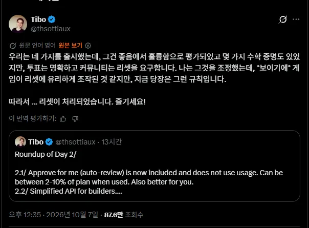
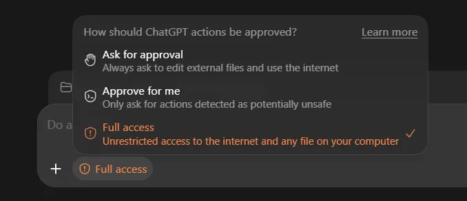
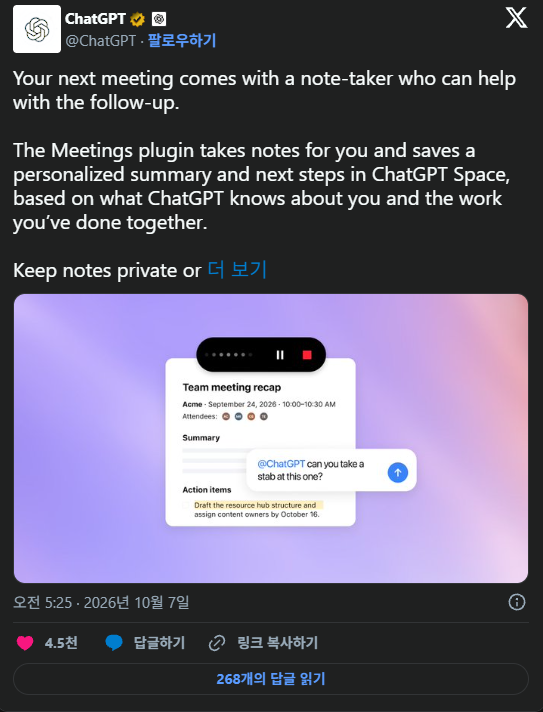
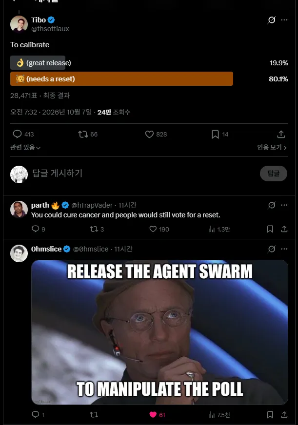
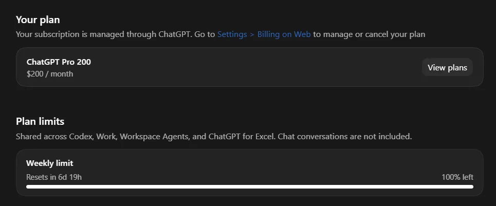

2일차가 그렇게 구린것만 있었냐고 묻는다면.....

2번째 선택해서 쓰시는 사람 한정으로 저 자동검열이 원래 사용량을 갉아먹는데 공짜가 됐다는점과
API 요금제 티어가 4가지에서 3가지로 간소화 됐다는것과 JEV 짭퉁을 LUNA로 구현했다는거 그리고

대충 이런것을 구현했다고 개선이라고 올렸는데....

유저들이 그냥 화형대로 ㄱㄱ? 이럴정도로 험악해졌음

어쨌든 리셋됬음 토큰 다떨어진 개붕이들 돌격 앞으로!!!
한줄요약 : 티보야!! 6.2 들고오면 모를까 지금 유저들은 너님들 반토막낸 토큰에 눈이 뒤집혔단다!!!!!
젓가락 소독~